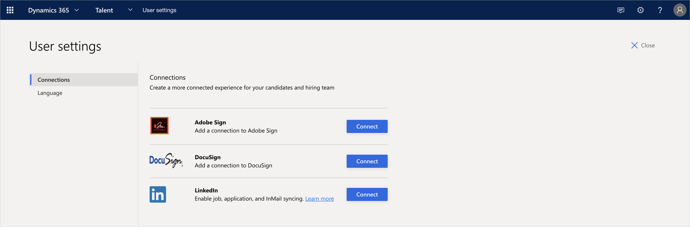
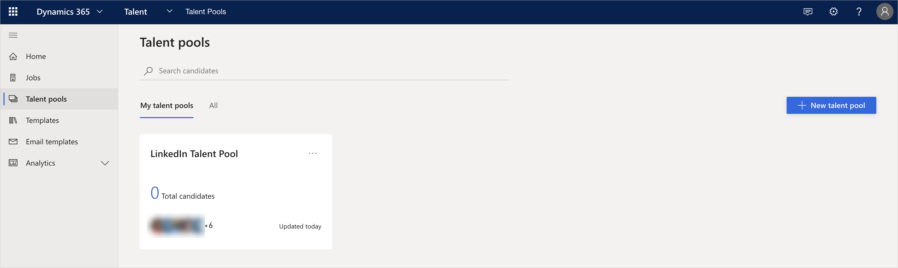
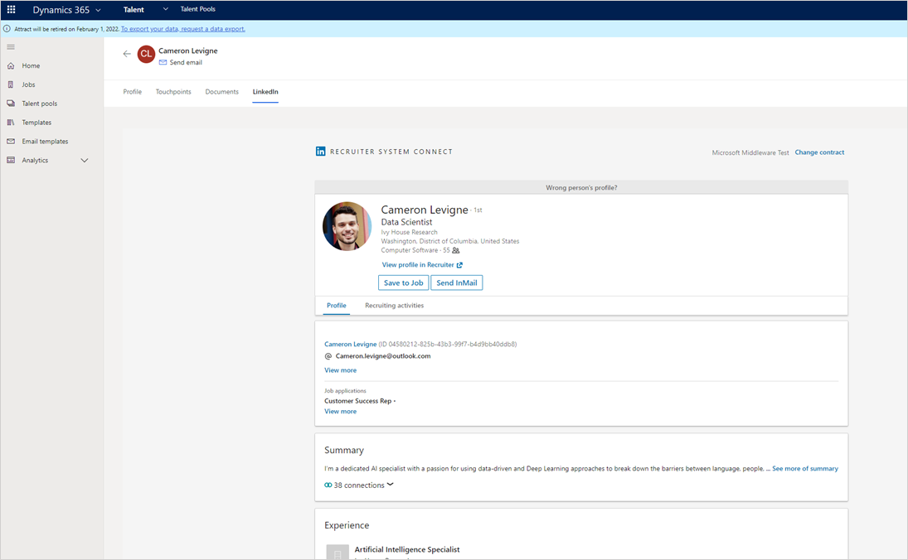
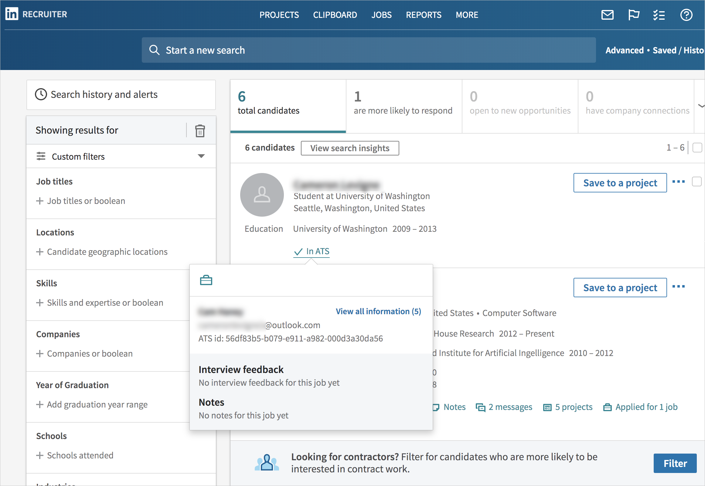

Kandidaten mithilfe von LinkedIn Recruiter in Attract anwerben
Important
Dynamics 365 Talent: Attract- und Onboard-Apps werden eingestellt. Weitere Informationen finden Sie unter Einstellen von Dynamics 365 Talent: Attract- und Onboard-Apps.
LinkedIn ist das größten Online-Berufsnetzwerk und ermöglicht Zugriff auf die besten Talente weltweit. Microsoft Dynamics 365 Talent: Attract ermöglicht es Ihnen Kandidaten direkt von LinkedIn zu suchen. Daher ist es einfacher als je zuvor, Talent zu finden, um die offenen Stellen zu besetzen. Nachdem Sie die Verbindung mit LinkedIn über Attract eingerichtet , können Sie LinkedIn-Kandidaten für die Positionen anzeigen und sie in Attract mit einem Klick exportieren.
Wenn Sie diese Funktion nicht besitzen, wenden Sie sich an den Administrator. Bevor Sie die Vorteile von LinkedIn Recruiter aus Attract nutzen können, muss Ihr Administrator die Einstellungsintegration mit LinkedIn einrichten. Sie können Ihre Verbindung mit LinkedIn Recruiter einrichten und dann das Suchen von Kandidaten starten.
Important
Ab dem 1. Juli 2020 unterstützt LinkedIn Internet Explorer 11 nicht mehr. Benutzer können weiterhin mit Internet Explorer 11 auf LinkedIn zugreifen, werden jedoch aufgefordert, ein Upgrade durchzuführen oder einen anderen Browser zu verwenden. Weitere Informationen finden Sie unter Unterstützte Internetbrowser für LinkedIn.
Richten Sie Ihre Verbindung mit LinkedIn Recruiter ein
Bevor Sie mit LinkedIn Recruiter über Attract arbeiten können, müssen Sie eine neue Verbindung mit LinkedIn Recruiter einrichten. Für diesen Schritt müssen Sie Ihre Anmeldeinformationen von LinkedIn Recruiter bereithalten.
Wählen Sie die Schaltfläche Einstellungen (Rad-Symbol) in der rechten oberen Ecke der Seite aus.
Wählen Sie Benutzer-Einstellungen.
Auf der Registerkarte Verbindungen wählen Sie Verbinden neben LinkedIn aus. Befolgen Sie die Anweisungen, die von LinkedIn bereitgestellt werden.

LinkedIn Kandidaten in Attract anzeigen
Nachdem Sie sich mit LinkedIn Recruiterverbunden haben, können Sie die LinkedIn-Profile der Kandidaten anzeigen in Attract.
Note
Wenn Ihnen ein Recruiter-Arbeitsplatz zugewiesen wurde, können Sie sich die vollständigen Informationen der Kandidaten anzeigen lassen.
Wenn Ihnen ein Arbeitsplatz als zukünftiger Vorgesetzter oder kein Arbeitsplatz zugewiesen wurde, müssen Sie sich bei LinkedIn oder LinkedIn Recruiter abmelden, bevor Sie in Attract zur Registerkarte LinkedIn für einen Kandidaten gehen. Sie können die grundlegenden öffentlichen Profildaten des Kandidaten anzeigen, z. B. seinen Vor- und Nachnamen.
In Attract wählen Sie Stellen oder Talentschmieden auf der linken Seite aus, und wählen Sie dann einen Bewerber aus.

Im Profil des Kandidaten wählen Sie die Registerkarte LinkedIn aus. Sie können das Profil des Kandidaten und den Verlauf InMail anzeigen.

Von hier aus können Sie folgende Aktivitäten ausführen:
Wählen Sie zum Anzeigen die Registerkarte Rekrutierungsaktivitäten aus:
- Recruiter-Notizen (sowohl öffentlich als auch privat). Notizen sind standardmäßig privat und nur für den Besitzer der Notizen sichtbar.
- InMail-Aktivität (aber nicht der InMail-Inhalt). Scrollen Sie zum Ende der Seite, um den InMail-Austausch mit Ihrem Interessenten und andere Benutzer in Ihrer Organisation anzuzeigen, die mit Ihrem Interessenten interagieren.
- Ablehnungsaktivität des Kandidaten
Wählen Sie InMail senden, um InMail zu senden, ohne Attract verlassen zu müssen.
Wählen Sie In einer Stelle speichern, um die Stelle zu speichern, ohne Attract zu verlassen.
Note
Das LinkedIn-Profil eines Kandidaten wird in Attract angezeigt, wenn die Attract-Informationen des Kandidaten mit den LinkedIn-Informationen übereinstimmen. Hier sind die Übereinstimmungsregeln, die verwendet werden:
- Wenn die E-Mail-Adresse und die LinkedIn-Kennung in Attract und LinkedIn übereinstimmen, wir das Profil des Kandidaten angezeigt. Kandidaten haben weiterhin die Option, Ihr LinkedIn-Profil von Attract zu verknüpfen oder zu lösen.
- Wenn die E-Mail-Adresse oder die LinkedIn-Mitglieder-Kennung nicht übereinstimmt, finden Sie eine Liste möglicher Kandidaten. Sie können dann einen Kandidaten in der Liste wählen und mit dem Profil verknüpfen.
- Wenn es keine guten Paare gibt, werden Sie darüber benachrichtigt, dass keine Übereinstimmung gefunden wurden.
Exportieren Sie LinkedIn-Kandidaten nach Attract mit nur einem Klick
Während Sie Kandidaten prüfen in LinkedIn Recruiter können Sie diese zu Stellen exportieren die aktuell in Attract offen sind. Für diesen Schritt müssen Sie Personalbeschaffer- oder Personaleinstellungsberechtigungen in Attract haben, Weitere Informationen zu Benutzerrollen in Attract finden Sie unter Sicherheit und Rollenverwaltung in Attract.
Stellen Sie außerdem sicher, dass die Stelle eine Interessentenphase hat. Weitere Informationen finden Sie unter Interessenten-Aktivität.
- In Attract erstellen Sie die Stelle, weisen Sie geeigneten Rollen zu und aktivieren Sie die Stelle.
- In LinkedIn Recruiter finden Sie einen guten Kandidaten für die Stelle und gehen zum Profil des Kandidaten.
- Mit dem Stellensuchfeld in der Kontaktkarte können Sie nach Titel oder nach Stellen-ID suchen, die in Attract aktiviert wurde. Wenn Sie nicht die Stelle finden können, wählen Sie ATS ändern, um die korrekte Attract-Instanz zu suchen.
- Wählen Sie die gewünschte Stelle aus, klicken Sie auf exportieren.
- In Attract öffnen Sie die Stelle. Der exportierte Kandidat wird auf der Registerkarte Interessent der Stelle angezeigt.
Attract Informationen anzeigen in LinkedIn Recruiter
Sie können nachverfolgen, ob sich ein Kandidat auf anderen Stellen in Ihrem Unternehmen beworben hat, nachsehen, in welcher Phase der Bewerbung er sich befindet und die Rückmeldung und Kommentare von Attract in LinkedIn Recruiter anzeigen.
Öffnen Sie LinkedIn Recruiterund wählen Sie ein Kandidatenprofil aus.
Fahren Sie mit der Maus über In ATS.
Wählen Sie eine beliebige der folgenden Optionen, um die Kandidateninformationen anzuzeigen, in Attract gespeichert sind:
- Stellen und Status – Stellen anzeigen, zu denen der Kandidat gehört, den Status anzeigen und wie der Kandidat in jeder Stelle vorankommt.
- Feedback zum Gespräch - Feedback zum Gespräch anzeigen, das der Gesprächsleiter in Attract übermittelt hat.
- Hinweise – Hier finden Sie alle Hinweise, die für diesen Kandidaten in Attract eingegeben wurden.

Note
Kandidaten- und Anwendungsdaten werden nicht mit LinkedIn Recruiter synchronisiert, wenn der Kandidat nicht die Interessentenphase überschritten hat.
Hier werden LinkedIn-Talentschmieden angezeigt
Wenn Kandidaten einverstanden sind, ihr LinkedIn-Profil einem Benutzer im Unternehmen freizugeben, wird ein neuer Kandidatendatensatz in Attract erstellt. Diese Kandidaten werden dann in einer LinkedIn-Talentschmiede vom System erfasst.
- In Attract wählen Sie Talentschmieden im Feld links aus.
- Wählen Sie die LinkedIn-Talentschmiede aus. Sie sehen eine Kandidatenliste und deren Kurzprofile von LinkedIn. Kurzprofile enthalten des Vor- und Nachname und die E-Mail-Adresse des Kandidaten, wenn der Kandidat dies freigegeben hat.
Siehe auch
Attract Integration mit LinkedIn FAQ
Einrichten der Integration mit LinkedIn für Microsoft Dynamics 365 Talent - Attract
Erstellen, Genehmigen und Buchen von Aufträgen in Attract
Veröffentlichen von Stellenausschreibungen auf LinkedIn mit Microsoft Dynamics 365 Talent - Attract
Problembehandlungsintegration mit LinkedIn und Microsoft Dynamics 365 Talent - Attract